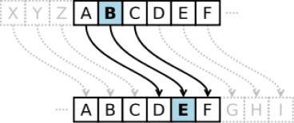
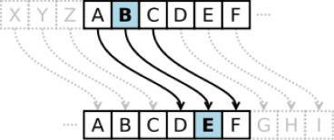

что такое криптография
Криптография решает задачи:
Самый распространённый и часто встречающийся вид криптографии - криптография с открытым ключом. Она представляет собой асимметричную схему, в которой применяются пары ключей: открытый ключ, который зашифровывает данные, и закрытый ключ, который их расшифровывает. Открытый ключ можно распространять без ограничений, в то время как закрытый держится в тайне. Хотя ключевая пара математически связана, вычисление закрытого ключа из открытого в практическом плане невыполнимо. Каждый, у кого есть ваш открытый ключ, сможет зашифровать данные, но не сможет их расшифровать. Только человек, обладающий соответствующим закрытым ключом, может расшифровать информацию.
ключ
некоторая величина, которая, работая в сочетании с криптоалгоритмом, производит определённый шифротекст. Ключи, как правило, — это очень большие числа. Несмотря на то, что ключевая пара математически связана, практически невозможно из открытого ключа вычислить закрытый ключ; в то же время, вычисление закрытого ключа всегда остаётся возможным, если располагать достаточным временем и вычислительными мощностями. Вот почему критически важно создавать ключ верной длины: достаточно крупный, чтобы был надёжным, но достаточно малый, чтобы оставался быстрым в работе.По современным представлениям 128-битовые симметричные ключи совершенно надёжны и не подвержены взлому, по крайней мере до тех пор, пока кто-то не построит функционирующий квантовый суперкомпьютер. 256-битовые ключи по оценкам криптологов не могут быть взломаны даже теоретически и даже на гипотетическом квантовом компьютере.
Основой криптографии можно назвать шифр. Шифр — система обратимых преобразований, зависящая от некоторого секретного параметра (ключа) и предназначенная для обеспечения секретности передаваемой информации.
Квадрат Полибия
шифр простой замены. В данном примере будет использоваться двумерная матрица 6х6, содержащая заглавные буквы алфавита и цифры от 0 до 9.
Сообщение: HELLO
Шифротекст: 22–51–62–62–33
 

Шифр Цезаря
считается самым первым. Цезарь использовал его для кодирования сообщений своим генералам, чтобы враги из Римской Империи не смогли прочитать приказы при перехвате. Способ шифрования: алфавит сдвигается вправо или влево. Разные значения сдвига приводят к разным результатам шифровки. Число сдвига — это число букв, на которое происходит смещение в одну из сторон, для создания шифротекста.
Сообщение: HELLO
Шифротекст: KHOOT